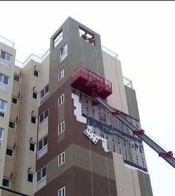

정부가 온실가스 감축을 위해 제로에너지 건축 정책을 추진함과 동시에 화재 관련 규제도 강화하면서 외단열 시스템에 대한 국가표준을 제정하고 관리할 필요성이 대두되고 있다.
1일 관련업계에 따르면 국내 외단열 시스템 시장이 급성장할 것으로 전망되지만 균일한 시공 품질을 보장할 국가표준은 없는 상태다.
외단열은 건물 외벽에 단열재를 시공해 단열 성능을 높이는 마감방식인데, 단열 뿐 아니라 화재시 유독가스를 덜 방출하고 화재 확산을 최소화할 수 있는 성능까지 요구되는 중요 요소다. 업계에 따르면 국내 외단열 시장은 마감재만 1500억원, 단열재까지 포함한 시스템은 3000억원 규모로 추정된다. 2010년 1500억원 규모였던 것이 10년도 채 되지 않아 2배 가량 성장한 것이다. 이는 정부가 지속적으로 건축물의 에너지 절감 정책을 펴면서 패시브, 제로 에너지 건축이 증가했기 때문이다. 앞으로는 노후한 건물의 개보수 수요가 증가하면서 10여년간 지속적으로 성장할 것이라는 업계의 관측이다.
그러나 국가표준이 없어 제대로 시공, 관리되지 않고 있다. 이에 지난 29일 화학경제연구원 주최로 열린 ‘제 6회 건축 및 산업용 단열재 기술세미나’에서는 이같은 지적과 개선방향에 대한 다양한 의견이 쏟아졌다.
한국건설기술연구원 강재식 선임위원은 ‘건축용 단열재에 대한 화재안전 기술개발 동향’발표를 외단열의 중요성이 커졌지만, 화재에는 여전히 취약하다는 점을 들어 국가표준 제정의 필요성을 역설했다. 2015년 의정부 대봉그린 아파트, 2017년 제천 스포츠센터 모두 외단열시스템 중 하나인 드라이비트와 잘못된 시공 탓에 화재피해가 커졌기 때문이다.

현재 외단열 미장 마감에 대한 국가 표준과 표준시방서가 없어 시공현장이나 시공사의 자체 시방서로 대체하고 있다. 그런데다 비용과 시간이 부족하고 전문적인 시공 기술자도 모자라는 탓에 현장관리 조차 제대로 되지 않는다. 외단열 시스템은 단열재와 표면 마감재 사이에 메쉬 미장을 일정한 두께 이상 시공해야 화재시 마감재가 떨어지거나 불이 크게 번지는 것을 늦출 수 있다. 그러나 의정부 화재 현장에서는 제대로된 성능을 발휘 할 수 없는 두께로 메쉬 미장이 시공됐고, 제천 화재 현장에는 메쉬 미장 없이 단열재 위에 마감재만 도포한 사실이 밝혀졌다.
아울러 현재는 메쉬 미장재료에 대한 화재 성능 기준이 없어 단열재를 준불연, 불연재를 사용하더라도 완벽한 화재 확산 방지를 기대하기 어렵다. 이에 메쉬 미장재료에 대해서도 준불연급 이상의 성능 기준이 필요하다는 지적이다.
메쉬 미장재료도 준불연 이상 성능 기준 필요
강재식 박사는 “현재 국가기술표준원에 외단열의 품질 기준에 관한 KS 제정을 요청했으며 검토를 진행 중”이라며 “단열재, 마감재 등 외벽 재료의 연소 특성을 고려해 외단열 시스템 전체를 실물화재실험할 수 있는 방법을 검토하고 있다”고 말했다.
업계에서도 외단열 기술의 표준화는 기술 발전을 이끌 것으로 보고 있다. 외단열 공사의 공종을 신설하고 전문 건설업 면허제를 도입해 공사 품질을 관리할 체계를 구축하는 방안도 제시됐다.
한국 바스프 김상규 부장은“공종을 신설해 면허를 도입하면 제대로 된 외단열 시스템이 보급되기 시작하면서 적정 단가에 공급할 수 있게 되며 장기적으로는 고급화, 다양화도 가능해질 것”이라고 말했다.
독일 외단열시스템은 1~3층까지는 3개의 불연단열재 띠를 시공하도록 기준
해외에서는 외단열 시스템에 대한 구체적인 기준을 마련, 운영 중이다. 독일은 외부와 내부 화재시 피해 정도와 확산 속도 등을 고려해 층별로 외단열 공법의 기준을 명시하고 있다. 1∼3층까지는 3개의 불연단열재 띠를 시공하고 최상층은 지붕 재료에 따라 불연단열재 띠를 추가하도록 한 것이다. 아울러 EPS 두께에 따라 외단열 마감재 기준도 두고 있다.
한국패시브건축협회 오대석 국장은 “설계, 시공 단계에서 안전하게 시공할 수 있는 기준을 규정하고 단열재를 붙이는 방법, 접착재의 성능 기준 등 세부요소벌 규정을 마련해야 한다”면서 “자재별 정확한 물성 데이터를 토대로 현장 시공의 하자 책임 범위도 명시해야 외단열 시스템의 시공 품질을 높이고 보증할 수 있을 것”이라고 설명했다.
준불연 가등급 EPS 단열재 DK보드
건축용 / 드라이비트용 / 판넬용
문의 1855-2240